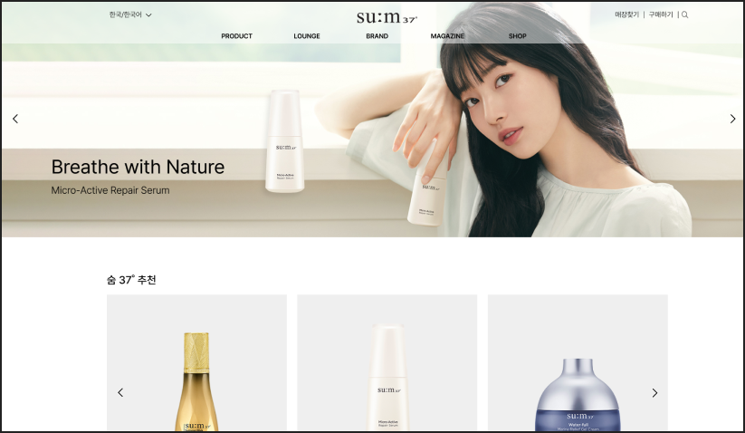
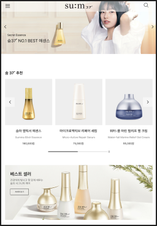
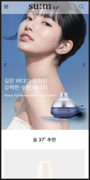

SUM 37˚ WEB PAGE REDESIGN



프로젝트 목표 : 컨텐츠가 부족한 웹 사이트를 화장품 웹 특징과 맞게 리디자인 및 설계
프로젝트 유형 : 웹 사이트 디자인 & 구축
프로젝트 기여도 : 개인 프로젝트 (100%)
프로젝트 기간 : 2023.06.12 ~ 2023.06.16
컨텐츠가 다양하지 못한 점에서 화장품 웹과 거리가 멀어 보이고,
브랜드 특색이 드러나지 않아 리디자인이 필요해 보임
반응형
JavaScript
CSS
- Flex와 Grid를 이용해 레이아웃을 제작함
- Swiper를 이용해 자동 슬라이드를 구현함
- 자바 스크립트를 이용해 슬라이드와 같은 다양한 움직임이 있는 웹 페이지를 구현함
- 주로 페이지의 디자인을 설계하는 작업을 함, 미디어 쿼리를 이용해 반응형 웹 페이지를 제작함
mobile : 480px
tablet : 768px
pc : 1920px
모바일에서는 적용되지 않는 hover 값을 빼고, 태블릿과 pc에서만 적용할 수 있게 수정하였다.
웹 페이지에 이용할 고화질 이미지를 찾는 데에 어려움이 있었다. 기존 사이트 이미지들은 크기가 작아서 크게 늘렸을 경우 이미지가 깨져서 보임. 이를 해결하기 위해 공식 sns를 통해 이미지를 찾고, 포토샵을 이용해 편집하여 이용했다.
박스 안 컨텐츠 양을 줄이거나 사이즈가 화면에 따라 변할 수 있게 %나 vw단위로 값을 설정했다.
디자인부터 퍼블리싱까지 직접 제작한 첫 프로젝트이다. 미디어 쿼리를 사용해 반응형 웹으로 제작하려고 하다 보니 다양한 부분에서 신경 써야 할 것들이 많았다. vw 값을 이용하여 사용자마다 다른 디바이스를 사용하는 것을 고려해 제작하는 데에 많은 노력을 했다.
HTML과 CSS 작업은 어느 정도 다룰 수 있어서 레이아웃이나 다양한 효과들을 수월하게 작업할 수 있었다. 이 프로젝트 이후에 JavaScript를 배우고 나중에 적용 시켜서 보니 더 웹에 가까워진 것 같고 작업물을 보며 뿌듯하다.
반응형을 제작할 때 모든 디바이스에 어떻게 보여져야 할지 많은 고민을 했고, 수업한 내용을 복습하거나 구글링을 하여 해결해 나갔다. 이번 프로젝트를 통해 실력을 많이 늘리게 되었고 어떤 방향으로 웹을 제작해야 하는지 알게 되었다.